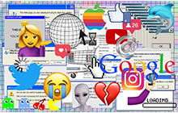

The code did not account for responses that didn’t match any of the dictionaries, and did not tag if a response falls into multiple categories, so we had to do that manually later on.
160 people mention "social media" as a key theme in design.
social media, afford to travel to attend overpriced conferences, or participate in the pay-to-play world of design awards shows. We shouldn't be relying on the loudest or most privileged voices among us to define our field."138 people mention "commoditization / consumerism / Capitalism" as a key issue in design.
consumerism [...] It's a way to make people work too much, to buy stuff they don't need, to impress people they don't care about [...] Design makes shitty stuff look nice and we're too image-obsessed to see past the materialism of  We need to check ourselves ↗"160 people mention "social media" as a key theme in design.
social feeds can118 people mention "undervalue / devalue" as a key issue in design.
devalue and desensitize work and art. which can lead to generic/devalued creativity."160 people mention "social media" as a key theme in design.
social media, which leaves a gap for younger designers coming into the industry. They have less opportunities and desire to make the kind of connections that have been so usefulfor older generations of designers like myself."384 people mention "impact" as a key theme in design.
impact are also not equipped to access it for financial reasons or lack of awareness. Wouldn't it be great if there were more programs [...] whose goal is to connect the organizations with the potential to do the most good with design and branding professionals that could help them build awareness and achieve their missions?"545 people mention "diversity" as a key theme in design.
diverse. I think as a whole, we are making strides towards this ideal, but still falling short. It is crucial for all designers to critically examine the social,200 people mention "environment" as a key theme in design.
environmental, and societal impact of their work."172 people mention "expectation" as a key theme in design.
expectation for designers to be a is the most challenging, harmful trend in the workplace. For example, expecting a designer to be not only a designer, but a videographer/social media manager/animator. What happened to hiring specialists in design roles?"200 people mention "environment" as a key theme in design.
environmental change will require design innovation in order to be implemented successfully. We need to more clearly separate138 people mention "commoditization / consumerism / Capitalism" as a key theme in design.
capitalistic gain and boundless expansion from the reallocation of resources where they are most needed."280 people mention "tech" as a key issue in design.
technology is the and we currently design products and services without much concern for their effect on our users. Being208 people mention "ethics" as a key theme in design.
ethical and considerate of your user, and not manipulating them for business purposes, I believe should be discussed more in the design community."1061 people mention "lack of" as a key theme in design.
lack of proper credit and attribution in1061 people mention "lack of" as a key theme in design.
160 people mention "social media" as a key theme in design.
200 people mention "environment" as a key theme in design.
environment [...] [...] Designers are taking a stand to make208 people mention "ethics" as a key theme in design.
ethical decisions because their overlords won't give them the power."160 people mention "social media" as a key theme in design.
social media (with no real ability to regulate the things we see / don't see). We are flooded everyday and aside from the mental / health issues this causes, we rarely take the time to look deeper. To look deeper into research, to look deeper into meaning, to look deeper into cause/effect.825 people mention "value" as a key issue in design.
value of design in order to speak the same language about its importance."